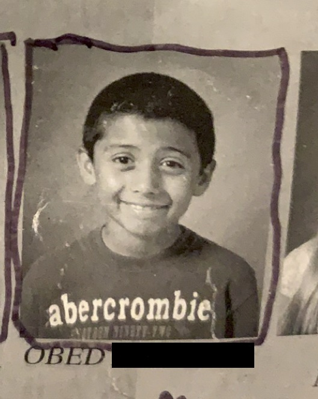
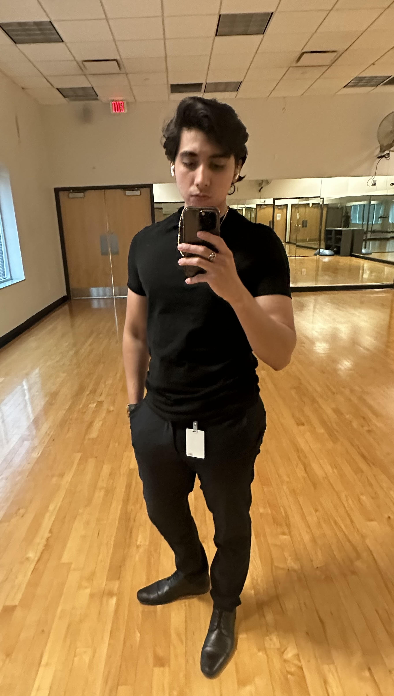

A young Obed was born and raised in Arizona, USA. I was raised very poor with my 2 older sisters and parents. We never vacationed anywhere and my whole life growing up was about getting out of the hood. I always wanted to be a software engineer since I was 8 years old and my entire time at school I wanted to rush to become one. I graduated high school a year early to get into college faster and I graduated from University in 2020.
Now I work as a software engineer at an insurance company and I am working towards retiring early at 30. I love to train MMA, workout, run, and work on my car. I am excited to see where the future takes me... =]
